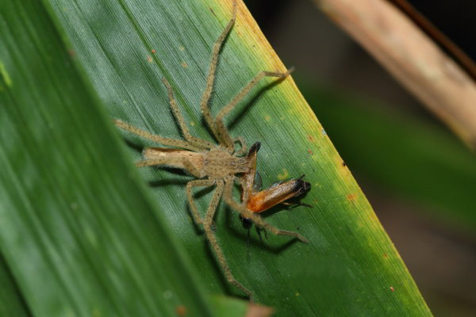
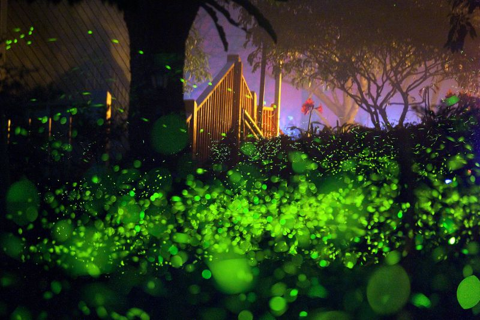
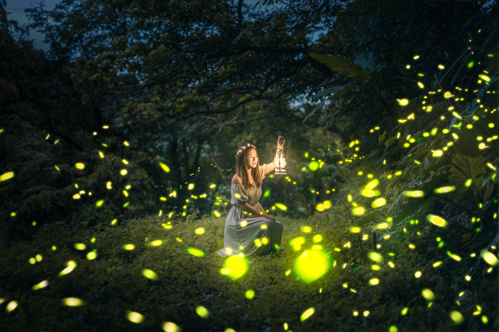

螢火蟲減少的原因？
一.蜘蛛：螢火蟲成蟲的頭號天敵，張網捕捉的，或是爬行地面獵捕的蜘蛛，都能輕易地捕獲螢火蟲捕獲。
二.蟎類：寄生螢火蟲的幼蟲。
三.椿象：捕食螢火蟲成蟲。
四.沼蠅：寄生螢火蟲的幼蟲。
五.長臂蝦、吳郭魚、水蠆：捕食水生螢火蟲的幼蟲。
六.人類：
1.自然環境過度開發，造成螢火蟲的棲息場所完全消失。
2.農藥、除草劑過度濫用，造成區域裡的螢火蟲族群大量減少。
3.稻田、溝渠邊坡水泥化，造成水生螢火蟲的幼蟲無法上陸化蛹。
4.照明設施設計不當，造成夜行性螢火蟲無法求偶繁殖。
5.不當的野放活動，造成原有的螢火蟲減少甚至滅絶。
|

|
如何守護螢火蟲的家？
注意不要在非必要處架設人工光源，或者可以調整光源照射範圍、角度及光色（以紅色或橘色較不影響螢火蟲）以減少對螢火蟲的干擾。
另外在清除野草時，一律改人工砍草的方式進行，萬萬不可以使用除草劑。
事實上如果在除草工作由人工砍草方式進行，不僅不會影響原有螢火蟲數量，反而會使原有螢火蟲族群增加。
其原因是經過除草行為，可以增加落葉量，如此亦是增加蝸牛的食物，蝸牛數量會因此而增加，如此一來，亦即增加螢火蟲幼蟲的食物，螢火蟲族群亦會因此而增加。
|

|
保護螢火蟲也是保護我們？
螢火蟲飛舞的所在，就代表這地區的生態還算健康。
所以保護螢火蟲，其實就是保護人類自己，會讓螢火蟲滅絕的棲地，其實對人類也是暗藏危險的。
而且螢火蟲復育的關鍵，不只是人工繁殖技術，其實只要把棲地準備好，螢火蟲就會不請自來了，讓大自然來養螢火蟲。
我們可以向國際宣傳台灣的賞螢火蟲活動，傳達『生態台灣』的意象，
當然，前提是我們必須珍惜環境，不輕易破壞生態，打造優質賞螢的環境，生態旅遊的推廣很值得更多農場、社區一起來參與。
|

|